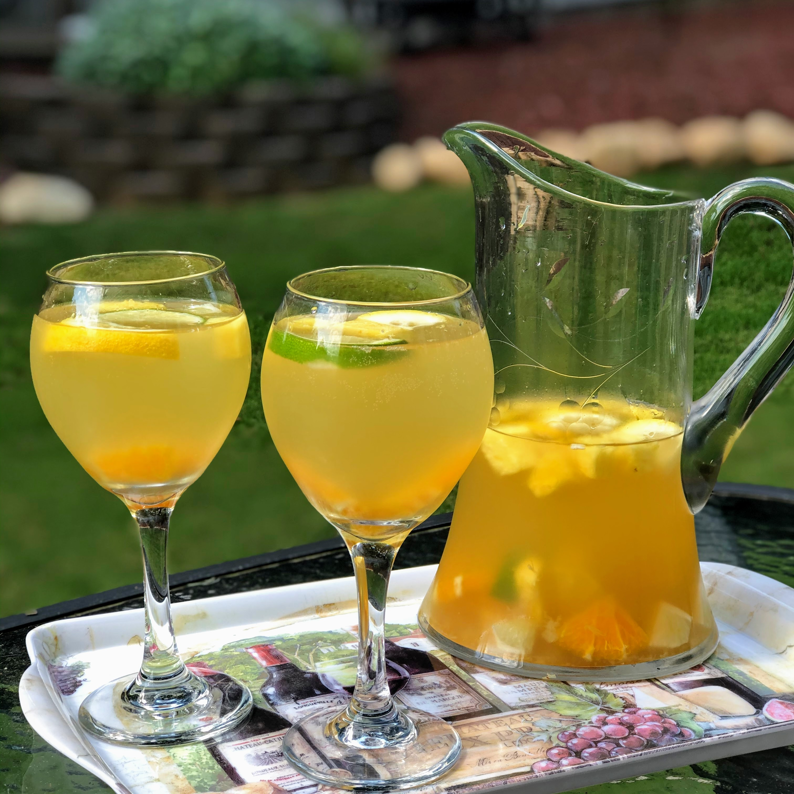

Brenda's Lasagna

Description
This is a cheap and easy way to make sangria made by an anonymous allrecipes
The description given by anonymous Allrecipes member is "Easy sangria recipe that can be easily altered based on fruit you have on hand and personal taste."
Ingredients
- 2 (750 milliliter) bottles Sauvignon Blanc
- 2 cups pineapple juice
- 1 cup triple sec
- ½ cup brandy
- ½ cup chopped fresh pineapple
- ½ cup chopped orange
- 1 lemon, seeded and chopped
- ¼ cup chopped lime
- 2 cups lemon-lime flavored carbonated beverage (such as 7-Up®)
Steps
- Mix Sauvignon Blanc, pineapple juice, triple sec, and brandy together in a large pitcher. Add chopped pineapple, orange, lemon, and lime. Cover and refrigerate, 8 hours to overnight.
- Stir in lemon-lime soda before serving.